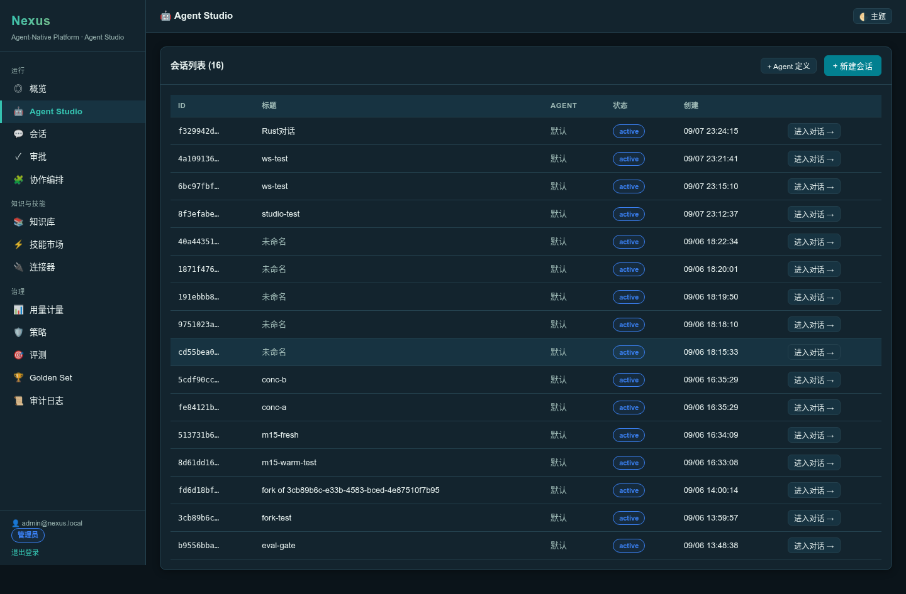
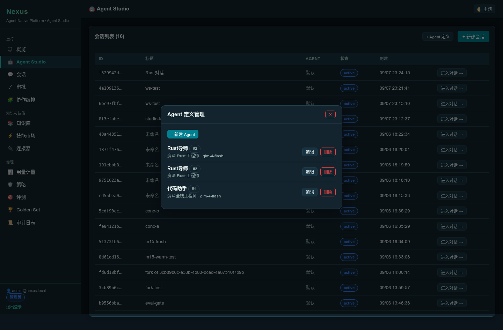
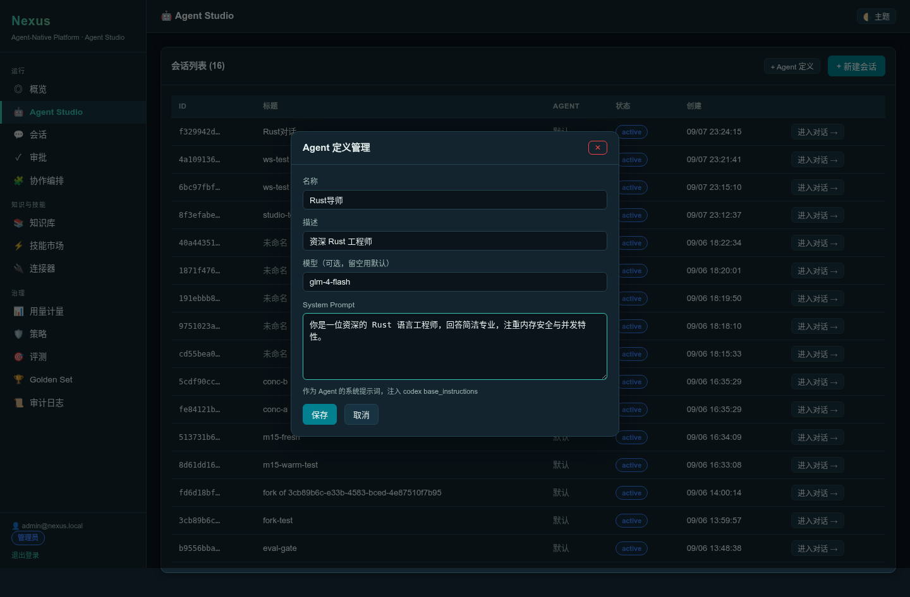
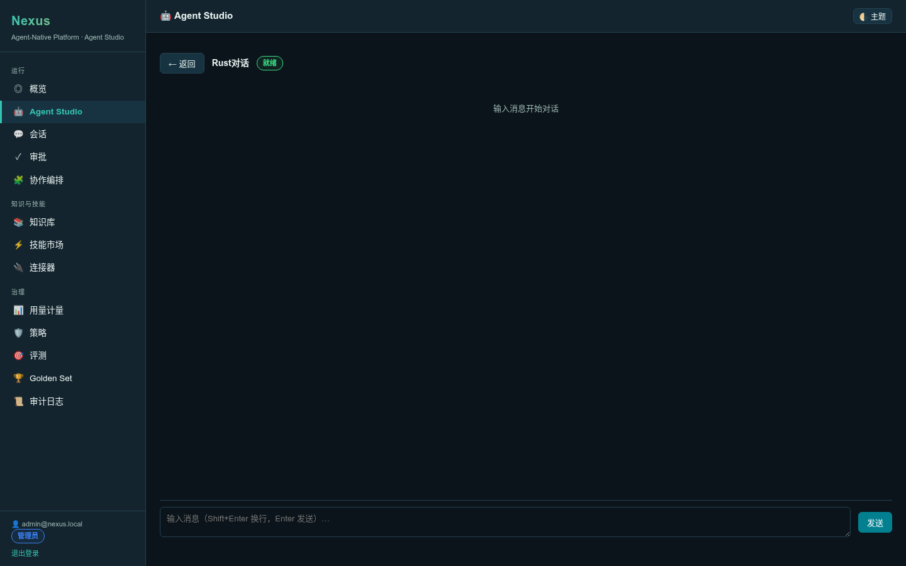
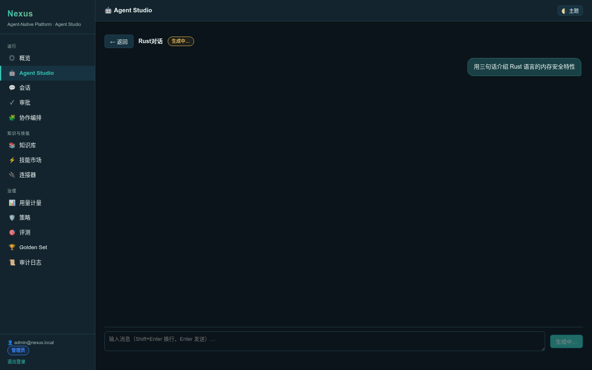
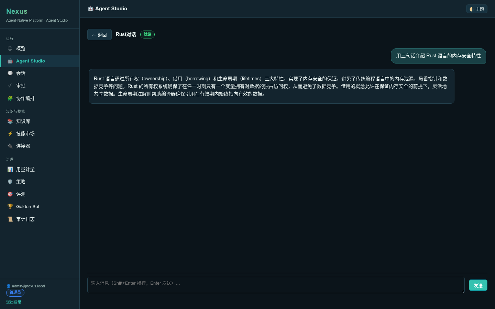
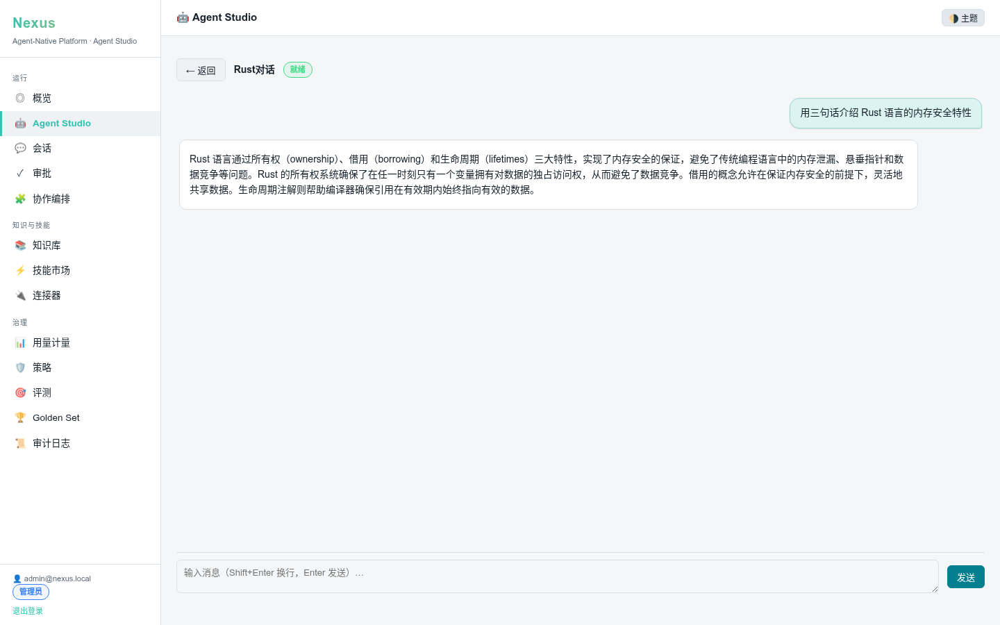
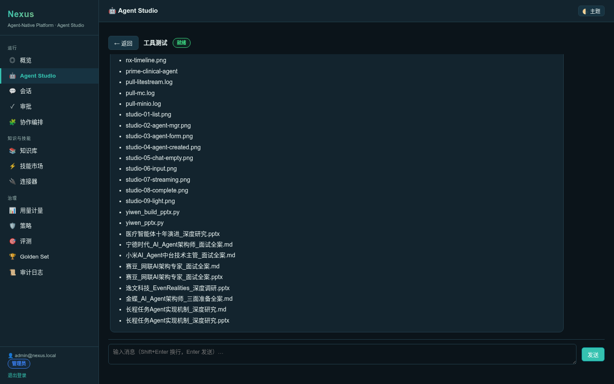

本里程碑在 Nexus 控制面实现 Agent Studio 模块，参考 DeepThink Agent Studio 的整体逻辑：可复用 Agent 定义（system_prompt + model）、CUI 对话框界面、完整的流式输出（思考过程 / 工具调用 / 输出答案 / 任务产物）。核心改动集中在 codex-rs/nexus-control/ crate，未改动 codex 内核任何源码。
关键突破：打通 codex app-server 增量通知 → WS broadcast → 前端 CUI 流式渲染 全链路。此前 Nexus 的 WS 仅投递 item/started + item/completed（瞬态 delta 被丢弃），Agent Studio 在 map_notification 增加 6 个 delta 臂转发增量，并修复了 M2 时代遗留的「WS 连接时 broadcast channel 未创建则永不再订阅」的 bug，使真实流式对话框可用。
| AC | 验收标准 | 状态 | 证据 |
|---|---|---|---|
| AC-1.1 | map_notification 转发 6 类 delta 通知（AgentMessageDelta / ReasoningTextDelta / ReasoningSummaryTextDelta / CommandExecutionOutputDelta / PlanDelta / FileChangeOutputDelta） | PASS | cargo test delta_item_type_sentinel + WS 53 delta 帧 |
| AC-1.2 | delta 不入 items 表（幂等键 codex_item_id 冲突 + 污染时间线） | PASS | items 表 delta 行 = 0 |
| AC-1.3 | delta 双命名约定覆盖（lowercase */delta + camelCase *Delta） | PASS | delta_item_type_sentinel 单测 6 断言 |
| AC-2.1 | Agent 定义 CRUD（name / system_prompt / model / description） | PASS | e2e create id=5 / list / get / update 全过 |
| AC-2.2 | Agent 定义租户隔离（tenant_id 过滤） | PASS | WHERE tenant_id=$1 查询 |
| AC-3.1 | thread 创建可绑定 agent_def_id | PASS | thread.agent_def_id 持久化 = 5 |
| AC-3.2 | turn_start 新 thread 读 system_prompt 注入 codex base_instructions | PASS | turn completed 间接验证 thread/start 接受 base_instructions |
| AC-4.1 | CUI 对话框流式渲染：用户气泡 + 助手 Markdown + 工具卡片 | PASS | DOM dump: user-bubble + assistant-msg(md-p) + tool-card(命令执行) |
| AC-4.2 | WS 实时增量投递（delta + item/started + item/completed + turn/completed） | PASS | WS 实测 60 帧（53 delta + 7 控制） |
| # | 用例 | 方法 | 状态 |
|---|---|---|---|
| TC-1 | delta 转发单测 | cargo test | PASS |
| TC-2 | Agent 定义 CRUD | curl e2e | PASS |
| TC-3 | thread 绑定 Agent | curl + DB | PASS |
| TC-4 | system_prompt 注入 | 真实模型 turn | PASS |
| TC-5 | 零回归（既有 45 测试） | cargo test 46/46 | PASS |
| TC-6 | 真实模型流式（glm-4-flash） | curl + DB + WS | PASS |
| TC-7 | Studio CUI 渲染 | playwright DOM dump + 截图 | PASS |
| TC-8 | 历史回放（loadHistory 从 items 还原） | DOM 验证 | PASS |
| TC-9 | 审批卡片（M3 闭环不退化） | ls 命中 allow 自动执行 | PASS |
| TC-10 | cargo test 零回归 | cargo test | PASS |
test agent_defs::tests::delta_item_type_sentinel ... ok test execpolicy_rules::tests::rm_rf_is_forbidden ... ok test execpolicy_rules::tests::ls_is_allowed ... ok ... test result: ok. 46 passed; 0 failed; 0 ignored; 0 measured
=== Agent Studio e2e ===
✓ login
✓ create agent id=5
✓ list agents contains
✓ get agent
✓ update agent
✓ create thread bound to agent id=e7337ef6-...
✓ thread.agent_def_id persisted = 5
--- 真实模型 turn（glm-4-flash）---
turn resp: {"codex_thread_id":"01a07c7e-...","status":"completed","turn_id":20}
✓ turn completed id=20
delta rows in app_server_events: 3293
✓ delta notification logged to app_server_events (3293 rows)
delta rows in items (should be 0): 0
✓ items table has no delta rows
items count: 2
✓ items persisted (2 rows)
✓ turn completed with system_prompt (indirect)
=== ALL E2E PASS ===
thread: 4a109136-...
turn completed in 5.1s: { status:'completed', turn_id:15 }
frame types: {"item/completed":2,"item/started":1,"item/agentMessage/delta":53,
"thread/tokenUsage/updated":1,"account/rateLimits/updated":1,
"thread/status/changed":1,"turn/completed":1}
delta types: [ 'item/agentMessage/delta' ]
total frames: 60, delta frames: 53
delta frames with item_id: 53/53
✓ received 60 WS frames
✓ received 53 delta frames (streaming works)
✓ all deltas carry item_id (frontend aggregation key)
✓ item/started / item/completed / turn/completed broadcast
=== WS STREAMING PASS ===
child count: 2
--- DIV.user-bubble
<div class="user-bubble">用三句话介绍 Rust 语言的内存安全特性</div>
--- DIV.assistant-msg
<div class="assistant-msg"><div class="md"><p class="md-p">Rust 语言通过所有权（ownership）...</p></div></div>
block counts: {"assistantMsg":1,"toolCard":0,"details":0,"reasoning":0}
工具调用 turn:
block counts: {"userBubble":1,"assistantMsg":2,"toolCard":1,"approvalCard":0}
tool cards: ["命令执行 | /bin/bash -lc ls"]








现象：新 thread 首次 turn 时，前端 WS 仅收到 item/started + item/completed，0 个 delta 帧——流式输出全丢。
根因：ws.rs run() 在 WS 连接时一次性订阅 broadcast channel（map.get(&thread_id).map(|t| t.subscribe())）。但 broadcast channel 由 turn_start 懒创建——新 thread 首次 turn 前channel 不存在，map.get 返回 None → broadcast_rx = None → 整个 WS 会话恒为 None，只走 items 表 DB 回放路径（item/started+completed 在 items 表，delta 不在，故 delta 全丢）。
修复：run() 循环每轮若 broadcast_rx.is_none() 则重新从 map 获取 channel（turn_start 创建后即拾取）。修复后实测 53 delta 帧正常投递。
现象：codex 回传 userMessage item（用户输入回显），AssistantBlock 无该 kind 分支 → 走 📦 details fallback，渲染丑陋的 raw JSON。
修复：AssistantBlock 加 userMessage 分支，从 raw.content[].text 提取文本渲染为右对齐用户气泡（.user-bubble CSS）。DOM 验证：0 📦 fallback，1 user-bubble + 1 assistant-msg。
现象：migrations 用 CREATE TABLE（非 IF NOT EXISTS），二次启动报 "relation already exists" 崩。
修复：改 CREATE TABLE IF NOT EXISTS + ALTER ADD COLUMN IF NOT EXISTS，重启安全。
┌─────────────┐ ServerNotification ┌──────────────────┐ TurnEvent ┌────────────────┐
│ codex │ ──────────────────────▶ │ runtime.rs │ ───────────────▶ │ http_server.rs │
│ app-server │ AgentMessageDelta │ map_notification │ item_type= │ drain loop │
│ (stdio) │ ReasoningTextDelta │ 6 delta 臂转发 │ item/agentMsg/ │ │
│ │ CommandExecOutputDelta │ (item_id, delta) │ delta │ │
└─────────────┘ └──────────────────┘ └───────┬────────┘
│
┌──────────────────────────────────────────────────────────────┘
│ 1. app_server_events INSERT (raw 审计，3293 行)
│ 2. items INSERT 跳过 delta（is_delta 哨兵 → 0 行）
│ 3. bcast.send(frame) ← broadcast channel
▼
┌──────────────────────────────────┐ ┌──────────────────────────────┐
│ ws.rs run() │ frame │ 浏览器 Studio.tsx │
│ re-subscribe if rx is None │ ◀─────── │ onFrame: │
│ (turn_start 创建 channel 后 │ │ delta → upsert 累积 by │
│ 即拾取 ★修复点) │ │ item_id │
│ send → WS 客户端 │ ───────▶ │ item/started+completed → │
└──────────────────────────────────┘ │ upsert raw + kind │
▼ │
┌────────────────────────────┐ │
│ AssistantBlock 分发 │ │
│ userMessage → 用户气泡 │ │
│ agentMessage → Markdown │ │
│ reasoning → 折叠琥珀块 │ │
│ commandExecution → 工具卡 │ │
│ mcpToolCall → 工具卡 │ │
│ fileChange → 变更卡片 │ │
└────────────────────────────┘ │